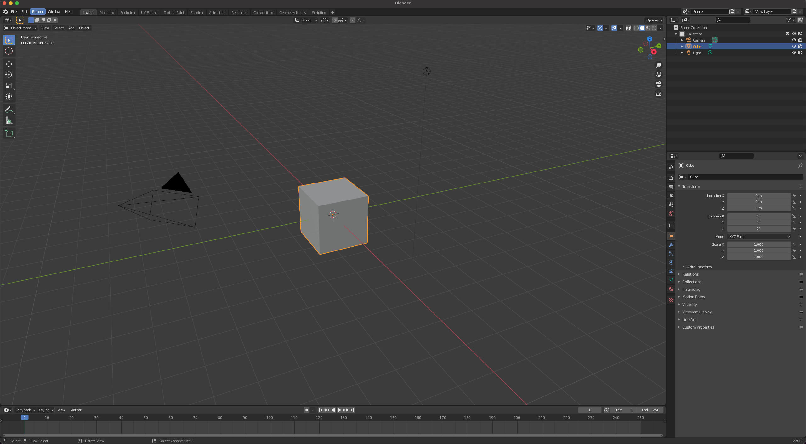
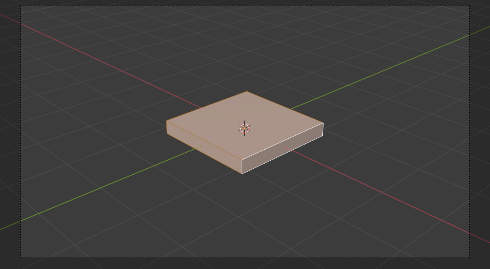
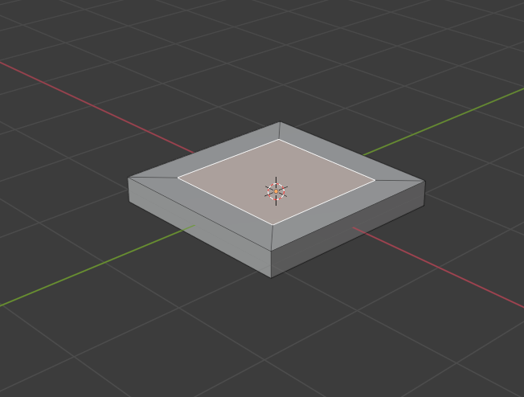
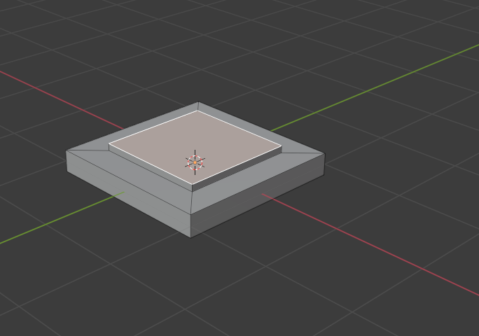
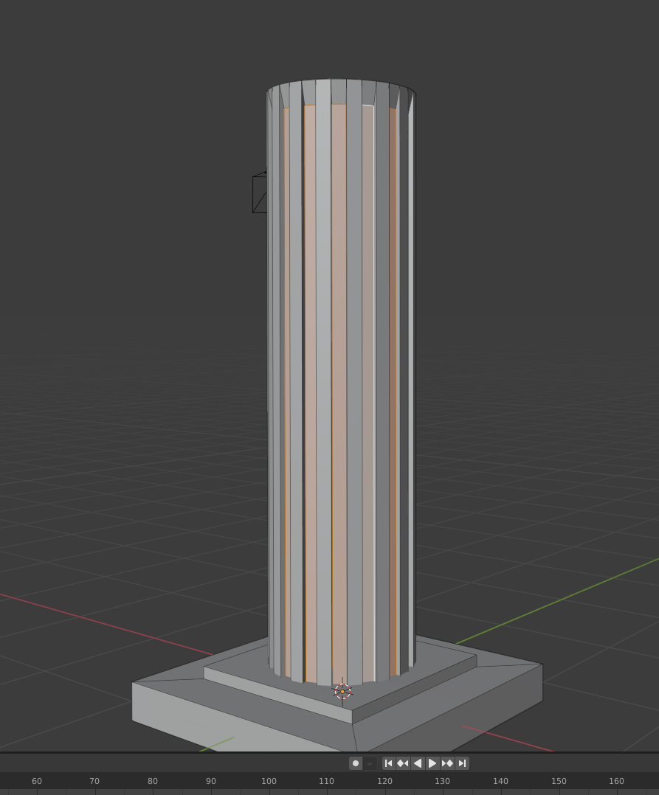
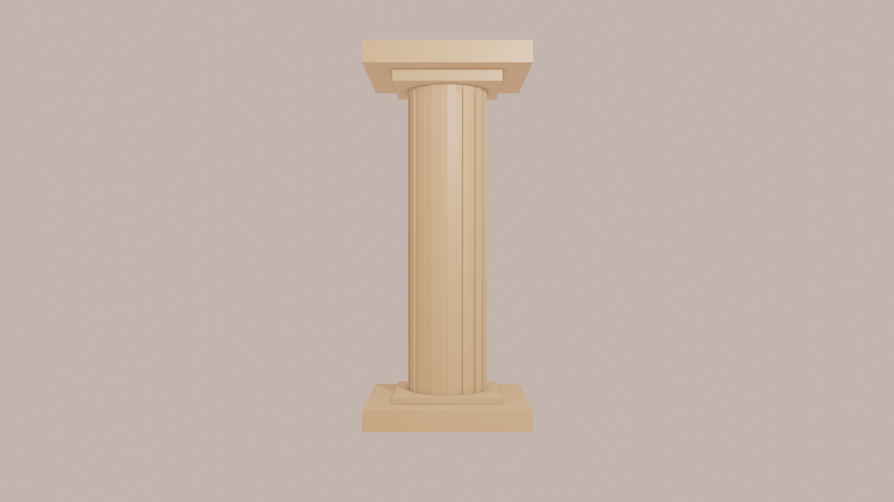
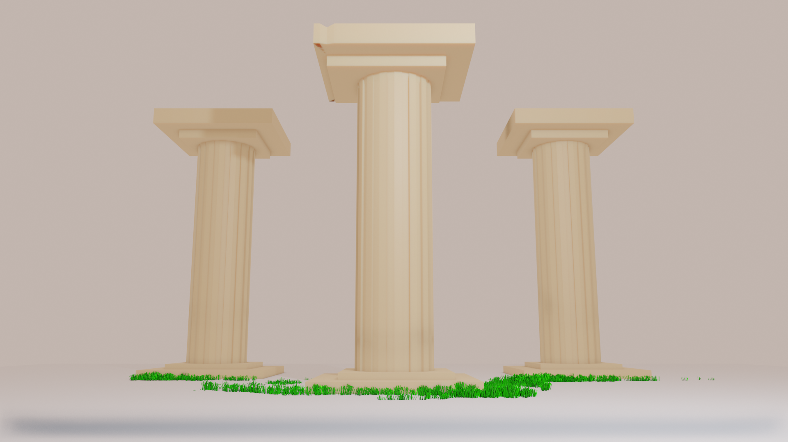

A Greek Column in Blender, Tips to get you started and Why I love Blender so much

Blender is the free and open source 3D creation suite. It supports the entirety of the 3D pipeline—modeling, rigging, animation, simulation, rendering, compositing and motion tracking, video editing and 2D animation pipeline.
Modeling in 3D has always fascinated me, and over the last two years I've spent more and more time working on environments. Many people have expressed interest and now with this platform I'd like to show off my first tutoiral. Maybe this will reach someone to start a new journey into 3d
setup
Setup is easy, Head to the download page here and grab the installer for your OS
Once installed you will be greeted with a cube. Almost anything can be made from this cube! There are a few things I would do to get you started.
lets create!
I can ramble on and on with setup but lets go ahead and start building. First, You can make almost anything from a cube. My best friends in blender are the X, Y and Z Axis
Let's select the cube, hit tab to go into edit mode and hit s to go into scale mode. Once in scale mode we can hit Z to scale along the Z axis. This is how we can go from a cube to a foundation stone!
This is my favorite way to scale Meshes. Meshes are what we call the objects we are forming. You can also scale along the X and Y axis. It truely is amazing all the things you can create just by taking an object and scaling it
Now, Har. YAAAA. Here are two tools that fight for second place. insert and extrude. As you see here when we select a face and press i for insert. We get a new box within the face. We can shrink this to our liking
Once we have a good size we can press E to extrude the center face. This pushes the selected face out or in. We can do so much with this!
 Now we can add new objects by pressing Shift + A. Select Mesh > cylinder
a new cylinder appears! Lets sretch it with our scaling tools. Select the object, Press S. Then hit Z and move your mouse up to have it grow to your liking Now for one of the last steps, Let's select every other face on the side of the column. Once every other face is selected we can bring them in with extrude E    Then all we have to do is recreate the bottom peice for the top :) small details make a huge differance